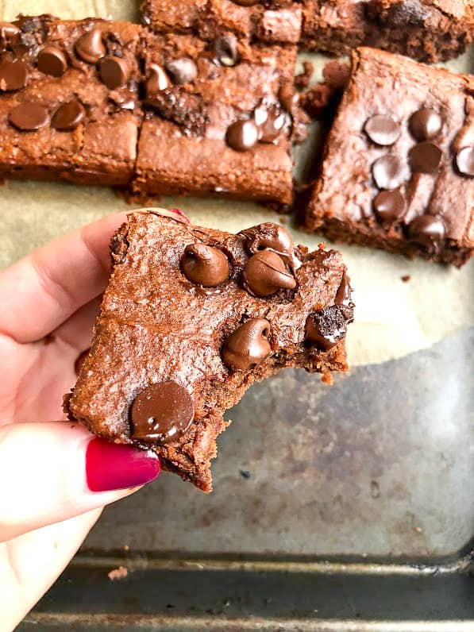

Gluten Free Chickpea Brownies

Recipe Description
Delicious protien brownies you can eat when ever
Ingredients
- 1 can chickpeas
- 1/2 cup of nut butter
- 1/2 cup of maple syrup
- 1 Tbsp melted coconut oil
- 1 tsp vanilla
- 1/4 cup of almond flower
- 1/4 cup cocoa powder
- 1/4 tsp baking soda
- 1/4 tsp baking powder
- 1/4 tsp salt
- 1/2 cup chocolate chips and more for sprinkling on top!
Directions!
- Preheat the oven to 350 F
- Blend chickpeas, nut butter, maple syrup, coconut oil, and vanilla,
Once blended, add in almond flour, cocoa powder, baking soda, baking powder, and salt.
- Once creamy and smooth stir in chocolate chips.
- Pour into greased 8×8 pan and sprinkle with extra chocolate chips
- Bake for 21-23 minutes.